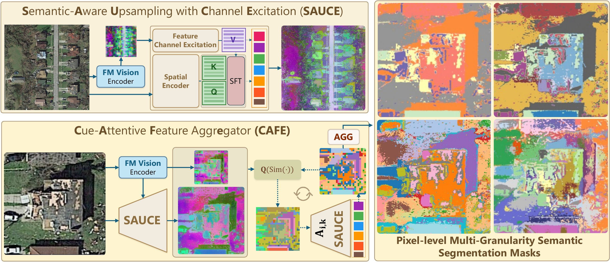

Overview of EASe. SAUCE lifts coarse foundation model tokens to pixel-level features via SE-calibrated cross-attention, where channel-excited features serve as values and key modulators through SFT conditioning. CAFE then quantizes these features into prototypes, refines them through attention-guided grouping, and hierarchically merges them into multi-granularity segmentation masks.
Abstract
Unsupervised segmentation approaches have increasingly leveraged foundation models to improve salient object discovery. However, these methods often falter in scenes with complex, multi-component morphologies, where fine-grained structural detail is indispensable. Many state-of-the-art unsupervised segmentation pipelines rely on mask discovery approaches that utilize coarse, patch-level representations. These coarse representations inherently suppress the fine-grained detail required to resolve such complex morphologies. To overcome this limitation, we propose Excite, Attend and Segment (EASe), an unsupervised domain-agnostic semantic segmentation framework for easy fine-grained mask discovery across challenging real-world scenes. EASe utilizes novel Semantic-Aware Upsampling with Channel Excitation (SAUCE) to excite low-resolution FM feature channels for selective calibration and attends across spatially-encoded image and FM features to recover full-resolution semantic representations. Finally, EASe segments the aggregated features into multi-granularity masks using a novel training-free Cue-Attentive Feature Aggregator (CAFE) which leverages SAUCE attention scores as a semantic grouping signal. EASe, together with SAUCE and CAFE, operate directly at pixel-level feature representations to enable accurate fine-grained dense semantic mask discovery. Our evaluation demonstrates superior performance of EASe over previous state-of-the-arts across major standard benchmarks and diverse datasets with complex morphologies.
Keywords: Unsupervised segmentation · Image segmentation · Squeeze-and-excitation · Domain-agnostic · Feature upsampling · Foundation models